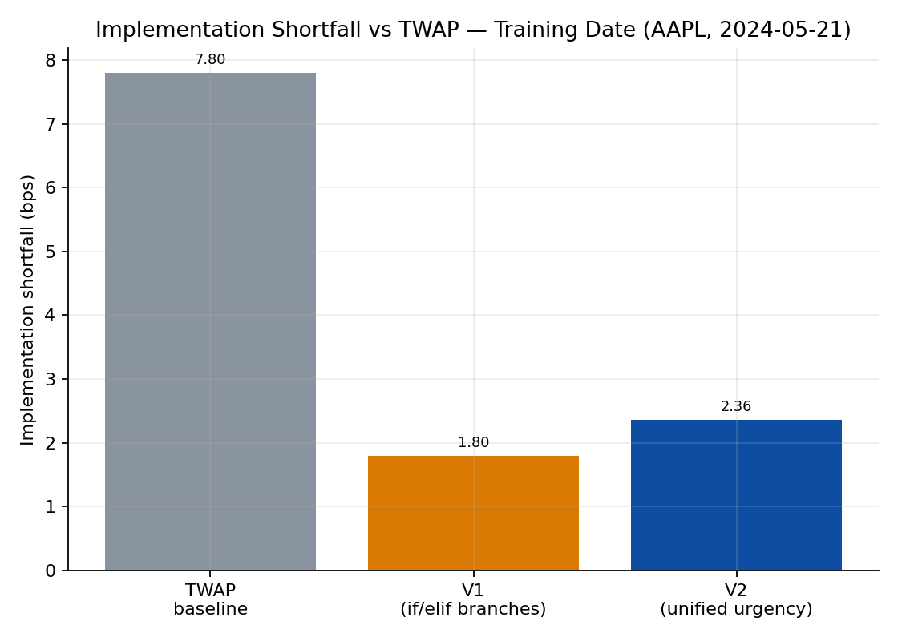

Optimal Execution for a $10M AAPL Buy Order
(AI-Assisted)
This page documents the executor assignment from MGMTMFE 412: Trading, Market Frictions, and FinTech at UCLA Anderson: build an algorithm that buys $10,000,000 of AAPL between 14:30 and 20:00 UTC, minimizing implementation shortfall (IS) relative to the arrival mid-price, and have it graded against a TWAP-12 starter strategy on hidden out-of-sample dates. As with the trader pages, every version of the code was developed together with Claude (Anthropic): I supplied the assignment brief, the previous version’s code, and the instructor’s feedback, and Claude proposed and implemented the execution logic, which I then tested locally and submitted. All figures below come from the autograder’s summary.json / twap_comparison.csv outputs and the instructor’s feedback reports.
The benchmark: TWAP-12
The starter strategy slices the order into 12 equal market orders spread evenly across the 5.5-hour window. On the training date (2024-05-21) it completes 99.98% of the order (52,022 of a 52,022-share target) at an average fill price of $192.3749, for an implementation shortfall of 7.80 bps / $7,799.55. Beating this benchmark — not in absolute terms, but in the skill_bps = student_SF - TWAP_SF sense defined by the grader — is the entire game.
V1: segment-voting momentum with if/elif branching
V1 is a 5-minute clock-bucket executor. At each checkpoint it computes a segment-voting momentum signal — the 15-minute lookback is split into three independent 5-minute sub-windows, each compared against a smoothed mid-price anchor, and a trade direction is confirmed only if at least 2 of 3 sub-windows agree (with a min_valid_segments=3 guard to avoid false signals in the first 15 minutes). This vote is combined with an L1 book-imbalance multiplier and a spread-aware limit/market order selector, on top of a geometric-decay base schedule (remaining_qty × dynamic_frac) that naturally front-loads execution.
On the training date this scored 1.80 bps — a huge improvement over TWAP’s 7.80 bps, since front-loading is exactly the right thing to do on an uptrend day (buy before the price rises further). But the decision logic was a stack of hard-coded if/elif branches with discrete multipliers (2x / 1.3x / 0.6x), which the instructor’s feedback flagged as the strategy’s central weakness: “what is missing is the guide’s unified urgency score… the student uses separate if/elif branches… rather than a single linear combination that allows all signals to interact continuously.”
Before committing to V1’s signal set, I ran an empirical accuracy comparison of L1 vs. L2 directional signals on the training date, at both 1-minute and 5-minute horizons:
| Signal | 1-min accuracy | 5-min accuracy |
|---|---|---|
| L1 static imbalance | 47.5% | 55.4% |
| L2 static imbalance (10 levels) | 34.4% | 44.9% |
| L2 depth-weighted microprice | 32.8% | 45.3% |
| Multi-level order-flow imbalance (Cont et al., 2014) | 47.7% | — |
L2 signals were worse than random at the 5-minute checkpoint horizon for AAPL — the instructor’s read is that “HFT market-maker quoting dominates levels 1-9,” so depth beyond the top of book is mostly noise for a 5-minute decision cadence. That result is why both V1 and V2 stayed L1-only by design.
Two alternatives were tried and rejected before settling on the geometric-decay + signal-multiplier design. A pure VWAP-tracking schedule gave 9.70 bps — worse than TWAP, because on an uptrend day VWAP “back-loads into peak prices.” A fixed-fraction schedule (BASE_FRACTION=0.07 applied uniformly, no signals at all) gave 1.05 bps — the best in-sample number of any variant — but was rejected as overfit to a single uptrend training day with no adaptive mechanism for a different regime.
V2: a unified urgency score
The redesign replaced the if/elif tree with a single continuous urgency score combining five normalized signals:
\[ u_t = 0.40\,\text{deficit}_{\text{norm}} + 0.25\,\text{drift}_{\text{norm}} + 0.20\,\text{imb}_{\text{norm}} + 0.15\,\text{time}_{\text{norm}}^2 - 0.10\,\text{spread}_{\text{norm}} \]
\[ \text{multiplier} = \text{clip}(1 + u_t,\ 0.30,\ 2.50), \qquad \text{qty\_slice} = \left\lfloor \text{remaining} \times \text{BASE\_FRACTION} \times \text{multiplier} \right\rfloor \]
The key design choice — and the explicit fix for V1’s failure mode — is that BETA_DEFICIT = 0.40 is set to dominate the combined bearish contribution (BETA_DRIFT + BETA_IMB = 0.45, but at moderate signal levels 0.40 alone still outweighs the realistic combined drag), so schedule-catch-up pressure can no longer be fully overridden by a bearish drift + imbalance read the way V1’s if/elif chain allowed. The full parameter set:
| Parameter | Value | Parameter | Value |
|---|---|---|---|
CHECK_INTERVAL_SECONDS |
300 | BETA_DEFICIT |
0.40 |
BASE_FRACTION |
0.06 | BETA_DRIFT |
0.25 |
TREND_LOOKBACK_SEC |
900 | BETA_IMB |
0.20 |
TREND_THRESHOLD_BPS |
1.0 | BETA_TIME |
0.15 |
min_valid_segments |
3 | BETA_SPREAD |
0.10 |
IMB_THRESHOLD |
0.05 | URGENCY_MULT_MIN |
0.30 |
COMPLETION_WINDOW_FRAC |
0.20 | URGENCY_MULT_MAX |
2.50 |
SPREAD_LIMIT_THRESHOLD_BPS |
0.80 | ||
TIME_LIMIT_MAX_FRAC |
0.65 |
On the training date, V2 scores 2.36 bps in the current local evaluation (2.46 bps was the figure during development, before minor post-write-up tuning) — slightly worse than V1’s 1.80 bps. That in-sample regression was accepted deliberately, on the bet that a continuous, principled urgency score would generalize better than a brittle if/elif tree.

Limits
The headline result here is not “V2 beat V1” — on the hidden dates it didn’t, and the grade reflects that. What V2 did do is replace a brittle architecture (hard-coded if/elif branches that the instructor identified as a structural risk) with a principled, continuous formulation whose failure mode is at least legible: it is structurally biased toward front-loading, which is correct on trending-up days and on the 2025-10-30 hidden date, but costly on the one genuine crash day in the hidden set. Two concrete gaps remain, both flagged directly in the feedback. First, the drift component is still a hand-crafted segment-voting heuristic, not the regression-based signal the course guide specifies — fitting \(r_{t,t+h} = a + b_1 \cdot \text{imbalance} + b_2 \cdot \text{microprice\_gap} + b_3 \cdot \text{recent\_return}\) on a rolling window of past observations would replace the hard-coded 1.0 bps threshold with data-driven coefficients and add a microprice-gap signal that’s currently absent entirely. Second, the urgency score has no depth-cost term: with \(u_t\) missing a \(-\beta_5 \cdot \text{depth\_cost}\) component, the strategy never slows down when the best ask is thin, even though an L1-only proxy (qty_this_slice / ask_sz_00, capped to a 10-20% participation rate) would be straightforward to add. Either change would also give the strategy a principled way to reduce front-loading specifically when the order book signals it’s expensive to do so — which is precisely the lever that’s missing from the current trade-off between the two hidden dates.